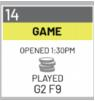
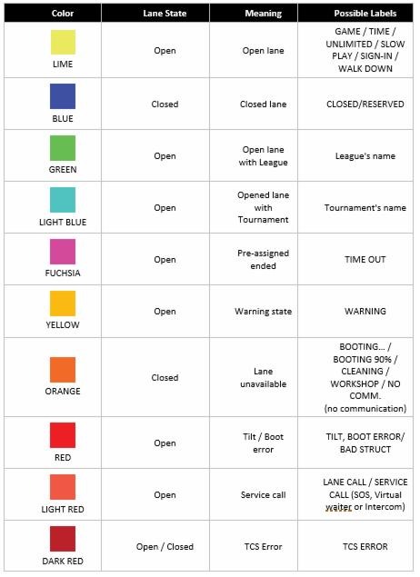
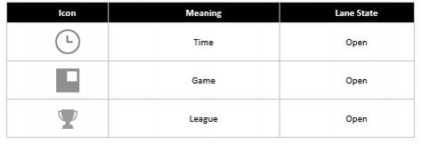
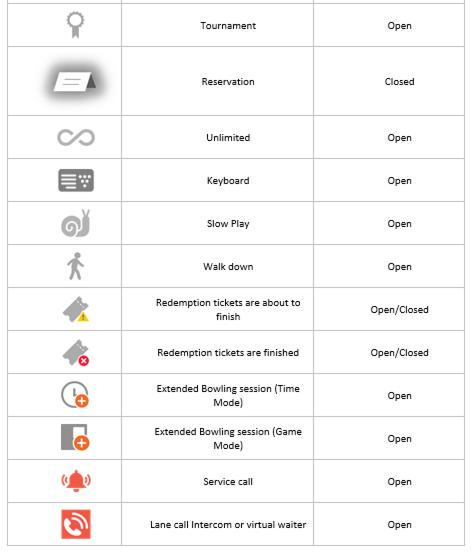
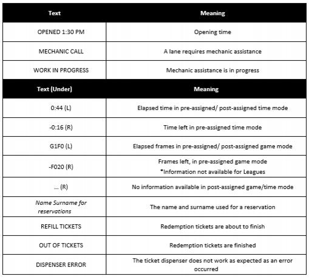
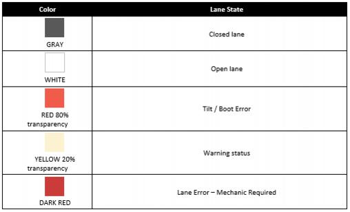

3.1 Lane Tile Layout
Each lane contains a status bar, a background color, an icon, and in certain circumstances text above/under the icon. This provides an accurate summary, in picture-form, of the current status of the lane. It is possible to increase or decrease the size of the tiles to better display all the lanes currently available at the Bowling Center. When the tiles require more space, the Lane Status is automatically subdivided into different scrolling windows. Click on the arrows to scroll through the Lane Status windows.
Furthermore, thanks to the Quick Access Menu, operators can subdivide lanes into different Lane Status windows if here are too many lanes, or if lanes are on different levels i.e. one module may be set for the first lanes and another for the next lanes or a module for each level, etc.
Lane Icon Legend
Each tile displays events containing a set of information which helps operators to effectively and easily manage the bowling center. Every time an event occurs, the tile changes color of the status bar and icon; in addition, each color is accompanied by a label which tells the operator what is currently happening on that lane. On top that, the tile, depending on the event, may show additional text above and under the icon.

Each tile consists of (top-down):
· The
top bar(Gray area) displays number of the lane· The
status bar(Colorful area) can have different colors and display different labels according to the event occurring. Each color matches a lane's state and comes with different labels. E.g. Yellow means that the lane is open; if the lane has been opened in game mode the yellow stripe will also show the "GAME" label (as shown in the image above).
·
Icons, along with the status bar, help operators understand the status of the lane with one glance. Icons give relevant information about the opening mode and other events that may affect closed and open lanes such as technical issues or lane errors.


· Text (above/under icon) is displayed only in some circumstances grouped together in the tables below. I.e. If an operator opens a lane, regardless of the opening mode, the "OPENED H:MM AM/PM" text appears above the corresponding icon. While one of the following texts will appears under the icon: REMAINING H:MM / REMAINING F## / ELAPSED H:MM / PLAYED G#F# depending on the opening mode of the lane (Game/Time/Unlimited).
· Background Color, together with all the other elements described above, adds information to the tiles on the lane status screen. These colors emphasize the state of the lane and any event that may be happening on it. Therefore, this color system helps operators to easily identify errors on lanes and supervise games when the lane is open.
|
|